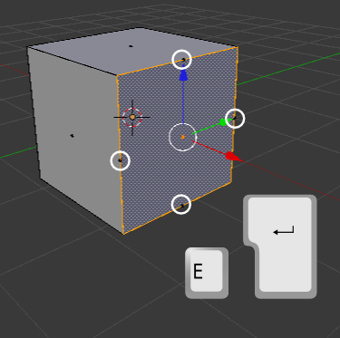

Extrusión nula
La extrusión "E" tiene mucha similitud
con la ya estudiada duplicación ("Shift_D") en Modo Objeto  : una vez dada la orden, es posible hacer
"Intro" o clic izquierdo para cerrar la edición sin haber desplazado la
cara. En tal caso, la cara separada se queda en su lugar de origen.
Puede dar la sensación de que esa es una cuestión sin importancia pero
no es así porque se produce una duplicación de los vértices. Imaginemos que
en esta imagen la cara estuviera en su lugar de origen...
: una vez dada la orden, es posible hacer
"Intro" o clic izquierdo para cerrar la edición sin haber desplazado la
cara. En tal caso, la cara separada se queda en su lugar de origen.
Puede dar la sensación de que esa es una cuestión sin importancia pero
no es así porque se produce una duplicación de los vértices. Imaginemos que
en esta imagen la cara estuviera en su lugar de origen...
... los vértices señalados se habrían duplicado dando lugar a un par de problemas:
- Los famosos puntos dobles que hay que evitar a toda costa y de los que hablaremos más adelante.
- Se han creado las caras necesarias. Lo podemos comprobar en esta
otra imagen en la que nos encontramos en modo de selección de caras
 , y
donde se ve claramente el símbolo que nos dice que las nuevas facetas
están, aunque de momento una de sus dimensiones es 0 (cero).
, y
donde se ve claramente el símbolo que nos dice que las nuevas facetas
están, aunque de momento una de sus dimensiones es 0 (cero).

Sin embargo este procedimiento es muy habitual; es decir, que es muy probable que queramos originar voluntariamente esa situación para hacer después un escalado ("S").
Si ha esto le añadimos una nueva extrusión ("E"), pero dirigiéndola ahora hacia adentro del cubo, habremos conseguido dar la sensación de grosor a sus caras.

A partir de ahora nos referiremos a este tipo de extrusión "E+Intro" como Extrusión nula.
Ejercitación
Modela la geometría de una mastaba egipcia poniendo en práctica la técnica que has estudiado sobre las extrusiones nulas y su posterior escalado y/o desplazamiento.
Esta imagen puede servirte de inspiración y referencia.
Pirámide escalonada en El Cairo, Egipto // Autora: Ainhoa Martín / Licencia: CC BY-NC-SA 3.0
Este modelado también te orientará.